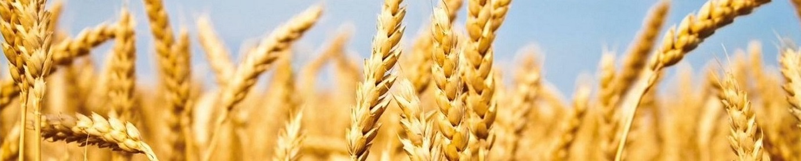
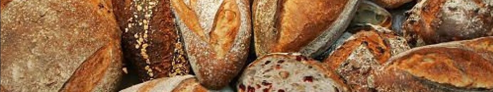

История хлеба
Ученые полагают, что впервые хлеб появился на земле свыше пятнадцати тысяч лет назад. Жизнь наших предков в те далекие времена была нелёгкой. Главной заботой была забота о пропитании. В поисках пищи они-то и обратили внимание на злаковые растения. Эти злаки являются предками нынешних пшеницы, ржи, овса, ячменя. Древние люди заметили, что брошенное в землю зерно возвращает несколько зерен, что на рыхлой и влажной земле вырастает больше зерен. Долгое время люди употребляли в пищу зерна в сыром виде, затем научились растирать их между камнями, получая крупу, и варить её. Так появились первые жернова, первая мука, первый хлеб. Первый хлеб имел вид жидкой каши. Она и является прародительницей хлеба. Её в наше время ещё употребляют в виде хлебной похлебки в некоторых странах Африки и Азии.
У дикорастущей пшеницы зерна с трудом отделялись от колоса. И, чтобы облегчить извлечение их, древние люди сделали ещё одно открытие. К тому времени человек уже научился добывать огонь и применял его для приготовления пищи. Было подмечено, что подогретые зерна легче отделяются от колосьев. Собранные злаки начали нагревать на разогретых камнях, которые помещали в вырытые для этого ямы. Случайно человек обнаружил, что если перегревшиеся зерна, то есть поджаренные, раздробить и смешать с водой, каша получается гораздо вкуснее той, которую он ел из сырых зерен. Это и было вторым открытием хлеба. Примерно шесть с половиной — пять тысяч лет назад человек научился возделывать и культивировать пшеницу и ячмень. В то время изобрели ручные мельницы, ступки, родился первый печеный хлеб.
Археологи предполагают, что однажды во время приготовления зерновой каши часть её вылилась и превратилась в румяную лепешку. Своим приятным запахом, аппетитным видом и вкусом она удивила человека. Тогда-то наши далекие предки из густой зерновой каши стали выпекать пресный хлеб в виде лепешки. Плотные неразрыхленные подгорелые куски бурой массы мало напоминали современный хлеб, но именно с того времени и возникло на земле хлебопечение. Когда древний человек с великим трудом взрыхлил землю, посеял зерно, собрал урожай и испек из него хлеб, тогда он обрел и родину. Прошло ещё много времени и свершилось ещё одно чудо. Древние египтяне научились готовить хлеб со сброженного теста. Считают, что по недосмотру раба, готовившего тесто, оно подкисло и, чтобы избежать наказания, он все же рискнул испечь лепешки. Получились они пышнее, румянее, вкуснее, чем из пресного теста.